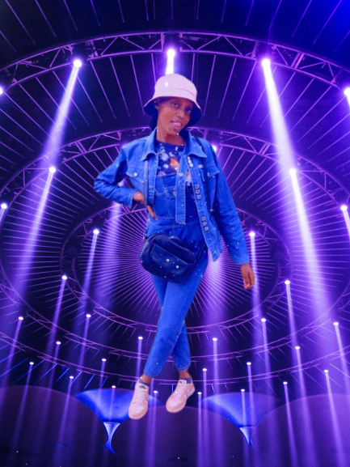
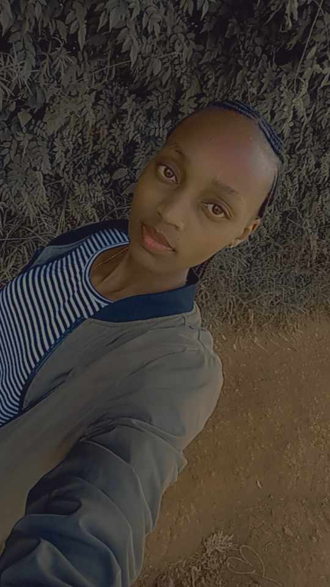

Pretty J e s s
About Me
📸 Hello, I’m ✨ Pretty Jess!✨ As a passionate photographer,
I weave stories through my lens, capturing slices of life and raw emotions.
My love for artistry and creativity knows no bounds, and I strive to share my unique perspective
with the world, one frame at a time. 🌟
📸 My lens becomes a storyteller, weaving narratives from sun-kissed
mornings to moonlit nights. Through the click of my shutter, I freeze laughter, tears, and stolen glances.
Each frame is a canvas of emotions, painted with light and shadows.

🌟 I chase fleeting moments, like dewdrops on petals or a child’s first step. My camera is my compass,
guiding me through bustling streets, serene landscapes, and intimate gatherings. In this chromatic dance,
I find solace and purpose.
🎨 Artistry blooms in every frame. The play of colors, the symmetry of
architecture, the wrinkles etched by time – they all whisper stories. And I, the silent witness,
translate them into pixels and prints.
🌿 So here I am, Pretty Jess, a curator of memories.
With every click, I invite you to see the world through my eyes, to feel the heartbeat of existence.
Welcome to my visual symphony. 📷✨
Portfolio Highlights
📸 Explore my diverse portfolio , where stunning landscapes stretch their arms toward the horizon. Feel the crisp mountain air as you gaze upon snow-capped peaks, their majesty echoing through valleys.
🌿 Vibrant portraits come alive, each face a universe of emotions. The wrinkles etched by laughter, the sparkle in eyes – they reveal stories untold. Humanity's tapestry , woven with threads of joy, sorrow, and resilience.
🌅 Captivating moments frozen in time : A child chasing bubbles, petals carried by the wind, lovers stealing glances. These fragments of existence, suspended in pixels, whisper secrets of life's fleeting beauty .
🎨 Each photograph tells a story , a chapter in the novel of existence. The dew-kissed rose, the weathered door, the sun painting the sky – they invite you to step closer, to feel the heartbeat of the moment.
🌠Immerse yourself in these visual narratives. Let the colors seep into your soul, the compositions dance in your mind. For in this gallery, time stands still, and you become part of the tale .
📷✨ Welcome, fellow traveler, to my world of pixels and dreams. 🌟
Services
I am a professional photographer who has a passion for capturing the beauty and diversity of the world. I have honed my skills and developed my own style through years of practice and learning. I have a portfolio of stunning images that showcase my talent and creativity. I offer my services to clients who need high-quality photos for various purposes, such as weddings, events, portraits, products, or publications. I am always looking for new challenges and opportunities to grow as a photographer and a business owner. I am a member of PPA, a non-profit organization that provides me with resources, tools, and community to help me succeed in my profession. I am proud of my work and enjoy sharing my stories and insights with others. I am a professional photographer who loves what I do. 📸
Our Email address : ghettopeople111@gmail.com
YouTube Channel : ghettopeople111
Photos
Interested in my photos? Feel free to view.
Thi is me captivating moments frozen in time.
Thi is Me as a passionate photographer

Thi is me capturing slices of life and raw emotions.

Thi is me sharing my uniqueness perspective with the world, one frame at a time.
Hobbies
Sleeping is a relaxing hobby that helps me recharge my energy and feel refreshed.
I enjoy watching scary movies because they are engrossing and thrilling. I like to feel the suspense
and the adrenaline rush of a good horror film.
Staying alone is a fulfilling hobby for me as an introvert. I appreciate the peace and quiet of solitude
and the opportunity to do what I want without distractions.
Photography is also my hobby that involves capturing moments in time, translating what you see and feel
into images that can be shared and appreciated